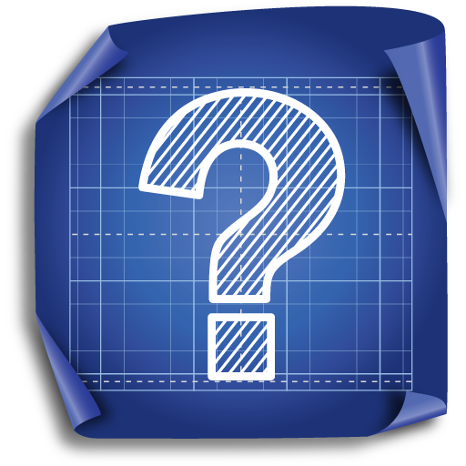

î
TesteGrila este o enciclopedie libera licenta sub care apar toate materialele din TesteGrila garanteaza faptul ca orice contributie la TesteGrila este facuta in interes public, fara nici o posibilitate ca vreo persoana fizica sau juridica sa-si insuseasca aceste materiale.
Serviciile noastre ofera o experienta unica, iar rezultatele se vad imediat dupa. Materialele de pe site sunt create de catre o echipa de profesori din invatamantul superior si sunt in intregime rezolvate, respecta programa scolara, contin probleme rezolvate, teme si teste, sinteze ale materiei, subiecte pentru examenele de Bacalaureat si Admitere la Facultate.

Link-uri utile
Situl Ministerului Educatiei si Cercetarii:
www.edu.ro
www.portal.edu.ro
Situri ale facultatilor:
www.upb.ro - Situl Universitatii "Politehnica" din Bucuresti
www.ase.ro - Situl Academiei de Studii Economice din Bucuresti
Situri de referate:
www.referat.ro
www.e-referate.ro
www.clopotel.ro
www.ereferate.ro
www.prereferate.ro
www.referat.librom.ro
Situri pentru fratii mai mici si pentru parinti:
www.magicland.ro
www.parinti.ro
Proiect de COVACI RAOUL-CRISTIAN
Proiect de Covaci Raoul